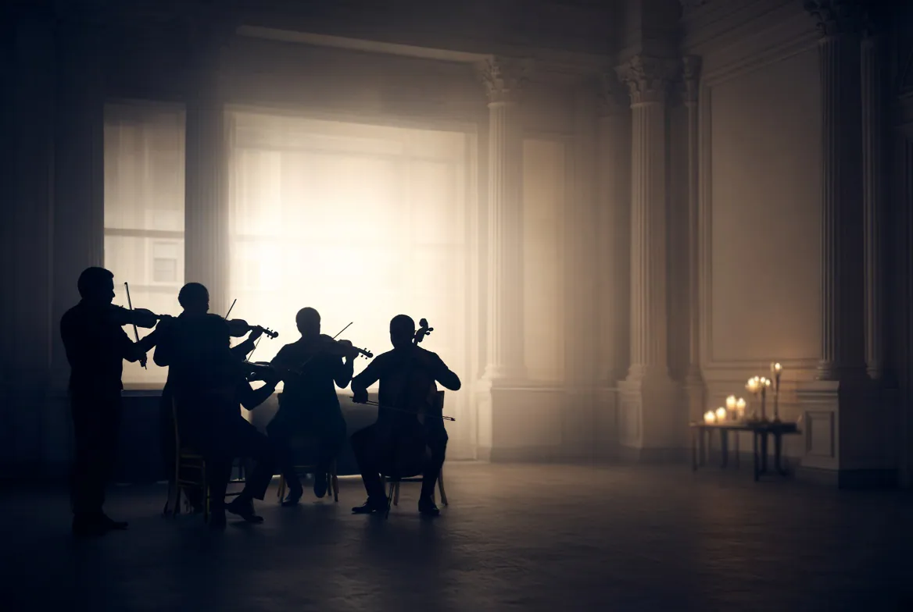

Un son sur mesure pour des oreilles exigeantesTailor-made sound for discerning ears
Le son fait partie de la triple promesse de L’Œil Singulier. Voici deux playlists de la maison, et une ambiance composée en direct par votre navigateur.
Sound is part of L’Œil Singulier’s threefold promise. Here are two house playlists, and an ambience composed live by your browser.

Une traversée musicale de ParisA musical journey across Paris
Entre héritage et modernité, chaque titre évoque un quartier, une humeur, une époque : la rive gauche et ses amours bohèmes, les néons du Marais, les nuits électro du canal, les voix éternelles de la chanson française. Des sons d’hier et d’aujourd’hui qui dessinent le portrait d’une capitale multiple, romantique, audacieuse, vibrante. Un Paris intime et universel, à écouter comme on tourne les pages d’un carnet de voyage.
Between heritage and modernity, each track evokes a neighbourhood, a mood, an era: the Left Bank and its bohemian loves, the neon of the Marais, electro nights on the canal, the timeless voices of French chanson. Sounds of yesterday and today that paint a city of many faces: romantic, daring, vibrant. An intimate, universal Paris, to be listened to like the pages of a travel journal.
- 01ParisElse
- 02ParisL’Impératrice
- 03From Paris With LoveMelody Gardot
- 04Paris canailleJuliette Gréco
- 05Sous le ciel de ParisÉdith Piaf
- 06La bohèmeCharles Aznavour
- 07Les moulins de mon cœurJuliette Armanet
- 08Lovers in ParisJacob Gurevitsch
- 09Ascenseur pour l’échafaudMiles Davis
- 10SympathiquePink Martini, China Forbes, Thomas M. Lauderdale
- 11Gosse de ParisCharles Aznavour
- 12Summer in ParisCam starring Anggun
- 13Parisienne WalkwaysGary Moore, Phil Lynott
- 14I Love ParisElla Fitzgerald
- 15Ça balance pas mal à ParisMichel Berger, France Gall
- 16Paris sera toujours ParisZaz
- 17Le poinçonneur des LilasSerge Gainsbourg
- 18Sous les ponts de ParisJuliette Gréco, Melody Gardot
- 19Revoir ParisCharles Trenet
- 20Il est cinq heures, Paris s’éveilleJacques Dutronc
- 21J’ai deux amoursJosephine Baker
- 22Un jour je reverrai ParisLine Renaud, Pierre Guillermin Orchestra

Montez le volumeTurn it up
Une sélection musicale faite avec amour pour égayer vos moments festifs : une expérience sonore conçue spécialement pour enchanter vos soirées.
A lovingly made selection to brighten your festive moments: a sound experience designed to enchant your evenings.
Merci à Patrick Clark pour son aide précieuse pour le mix des morceaux, et à Dean Dorat pour la réalisation du visuel.Thanks to Patrick Clark for his invaluable help mixing the tracks, and to Dean Dorat for the artwork.
- 01Dumb LoveNeil Frances
- 02HappinessBlank & Jones, Cathy Battistessa
- 03I’m Coming HomeDino Lenny
- 04Different From The RestIn Flagran
- 05The Love ForeverKevin McKay
- 06All In A DreamDJ Tennis, Joseph Ashworth & LP Giobbi
- 07Most Expensive DiamondNever Dull
- 08L.O.V.E.Purple Disco Machine & Boris Dlugosch
- 09TonightSuzy Q
- 10BeachesJesper Ryom
- 11MuyéRampa, Adam Port, &ME
- 12Running Up That HillChromatics
R.S.V.P.
Un événement à imaginer ? Quatre questions sur un carton-réponse, et Elena vous rappelle pour en parler.
An event to imagine? Four questions on a reply card, and Elena will call you back to talk it through.